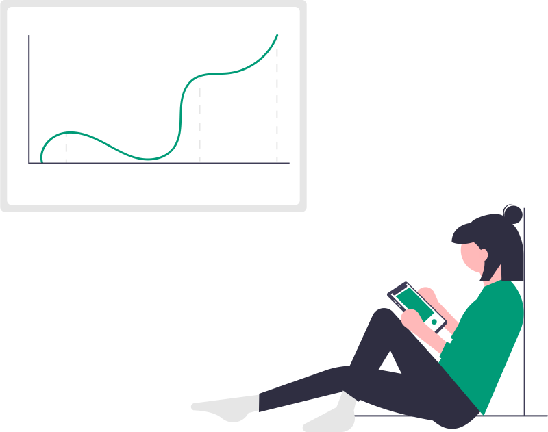
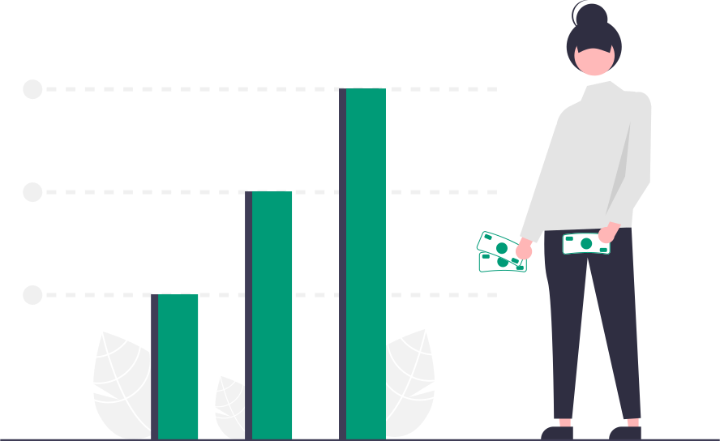

In this section, we have a different look at Forough’s poems through the new lens of data visualization
using statistical analysis of the main words used by the poet in each book.
This type of data analysis could provide us with the mindset of the poet and
brighten the transformative journey of the poet as an influential character in forming the literature of a
nation.
This method can be used by sociologists to make accurate determinations and better analyses of cultural
transformations in different societies.
For instance, using the data analysis of works of prominent writers and poets,
sociologists can study the intellectual and cultural line of a society and even predict it’s future
direction.
In the first step, the total collections published by the poet are analyzed by Voyant.
Based on the words that have the highest frequency,
it can be inferred that the main General theme of Forough poems in all of her collections is likely related
to
her emotions, personal feelings, and relationships with people.
However, as a new sight to Forough’s journey,
we analyze each of her books separately to better understand her literary orientation.
For the next analysis, we divide these words into three categories,
words with positive orientation, negative orientation, and neutral words:
Neutral words: Total Number: 360
heart (102), eye (53), lip (49), gaze (39), know (26), star (21), moment (20), body (20), soul
(19)
Negative words: Total Number: 159
night (59), silent (36), darkness (23), sorrow (21), secret (20)
Positive words: Total Number: 222
love (62), kiss (37), embrace (29), desire (27), longing (26), hope (21)
Orientation of Word Iteration of Book 1

Literary Analysis
Here are five main themes of the book:
Emotions and Relationships:
Words like "heart," "love," "sorrow," "desire," "longing," and "embrace" suggest a focus on emotions and
relationships.
This theme may explore the complexities of love, longing, sorrow, desire, and the deep connections between
individuals.
Introspection and Existentialism:
The presence of words such as "soul," "know," "silent," "darkness," and "secret"
indicates themes related to introspection and existentialism.
This motif could delve into questions of identity, inner
struggles, personal revelations, and the search for meaning in life.
Nature and Symbolism:
Terms like "star," "night," "moment," and "hope" imply themes of nature and
symbolism.
This theme
may involve reflections on the beauty and transience of life, as well as the symbolism associated with
natural elements
like stars and the night sky.
Communication and Connection:
The inclusion of words like "eye," "gaze," "lip," "kiss," and "body"
suggests themes
related to communication and connection.
This motif may explore the power of nonverbal communication,
physical intimacy,
and the significance of human touch in forming connections.
Yearning and Aspiration:
The presence of words such as "hope," "desire," "longing," and "embrace" points
to themes of
yearning and aspiration.
This theme may involve the exploration of dreams, aspirations, and the pursuit of
a better
future, as well as the emotional journey associated with striving for one's goals.
These themes offer insight into the overarching motifs and subjects explored within the book, reflecting
its potential
focus on the complexities of human experience, relationships, and existential inquiries.
Based on the density of negative and positive categories we could conclude that “The Captive” which is
written in the
first stage of the poet's life possesses mostly a positive theme reflecting her hopefulness and positive
attitude to
life. We know that while writing “The Captive” Forough was in Love with Paviz, a love that resulted in the
marriage
bond. So, despite the book name that beers a negative meaning, Forough's thoughts and feelings describe
her as a free
happy young girl full of hope and Passion for life.
Here are the words categorized into positive orientation, negative orientation, and
neutral words along with their frequencies:
Neutral words: Total Number: 196
Containing: heart(31), eye(37), path(20), lip(19), body(17), soul(15), gaze(13), breeze(13), sky(12)
Negative words: Total Number: 98
Containing: night(28), shadow(22), sorrow(16), silent(16), darkness(16)
Positive words: Total Number: 98
Containing: love(22), sun(19), dream(17), longing(15), desire(13), kiss(12)
Orientation of Word Iteration of Book 2
Literary Analysis
Here are five main themes of the book:
Inner and External Perception:
Words like "eye," "heart," "soul," and "gaze" suggest a focus on
perception,
both
internal and external.
This theme may explore how individuals perceive themselves, others, and the world
around them, as
well as the depth of their emotions and desires.
Love and Longing:
The presence of words like "love," "longing," "desire," "kiss," and "sorrow" indicates
themes centered
around love, emotional connections, and yearning.
This theme may delve into various aspects of romantic
relationships,
including passion, loss, and the complexities of desire.
Night and Darkness: Words such as "night," "shadow," "darkness," and "silent" suggest themes related to
darkness and the
night.
This motif could symbolize various concepts, including mystery, solitude, introspection, and the
unknown.
Journey and Exploration: Terms like "path," "dream," "sky," and "breeze" imply themes of journey and
exploration, both
physical and metaphorical.
This theme may involve quests for self-discovery, spiritual enlightenment, or
the
pursuit of
dreams and aspirations.
Body and Sensuality:
The presence of words like "lip," "body," "sensuality," and "kiss" suggests themes
related to
physicality and sensuality.
This motif may explore the connections between the body and the self, as well
as
the
experiences of pleasure, intimacy, and desire.
These themes provide insight into the overarching motifs and subjects explored within the book, reflecting
its potential
focus on the complexities of human emotions, relationships, and existential journeys.
This analysis can reveal a new interpretation that may not have been discernible before. As it’s obvious
from word
analysis, the count of negative and positive words are exactly the same. We know that “The Wall” poems
were
written
during the last years of marriage of Forough when she was grappling with the problems of a housebound
woman
trapped in
the bonds of marriage in the traditional society of that time while still loving her husband.
This
struggling situation
caused the passion, eagerness, and freshness of a young girl to fade. Though a mixture of hope and
frustration existed
in her equally. The Wall was dedicated to her ex-partner as a tribute to their deep love.
Most frequent words in the corpus are categorized as bellow:
Neutral words: Total Number: 259
Containing: eye(30), world(26), god(26), heart(25), path(25), day(21), moment(18), face(18),
existence(18),
chest(14)
Negative words: Total Number: 156
Containing: dark(33), night(30), silent(18), pain(18), cry(15), hell(14), darkness(14), cold(14)
Positive words: Total Number: 48
Containing: love(24), hand(24)
Orientation of Word Iteration of Book 3
Literary Analysis
Here are five main themes of the book:
Darkness and Night: Represented by words like "dark," "night," "darkness," and "cold," these themes
suggest
a prevalent
motif of darkness, symbolizing various aspects such as despair, mystery, or the unknown.
Inner and External Perception:
Words like "eye," "face," and "heart" indicate a focus on perception, both
internal and
external. This theme may explore how individuals perceive themselves, others, and the world around them.
Existential and Spiritual Exploration: Terms like "existence," "god," and "hell" suggest themes related
to
existentialism and spiritual exploration. This could involve questioning the meaning of life, grappling
with
religious
or philosophical beliefs, or confronting existential crises.
Love and Relationships:
The presence of words like "love," "hand," and "heart" suggests themes centered
around love,
relationships, and emotional connections. This theme may delve into various aspects of human
relationships,
including
love, loss, longing, and intimacy.
Suffering and Pain:
Words such as "pain," "silent," "cry," and "chest" indicate themes related to
suffering
and
emotional turmoil. This theme may explore the experiences of pain, grief, and hardship, as well as the
internal
struggles faced by individuals.
These themes provide a glimpse into the overarching motifs and subjects explored within the book,
reflecting
its
potential focus on existential, emotional, and spiritual aspects of the human experience.
Most frequent words in the corpus are categorized as bellow:
Neutral words: Total Number: 379
Containing: water(40), heart(34), eye(31), hand(29), star(29), window(24), fish(23), body(23),
scent(21),
moon(21),
wind(20), seventy(20), moment(20), day(34)
Negative words: Total Number: 89
Containing: darkness(24), night(65)
Positive words: Total Number: 104
Containing: love(34), life(26), light(23), flower(21)
Orientation of Word Iteration of Book 4
Literary Analysis
Based on the most frequently recurring words in the provided list, here are five main
themes of the
book:
Night and Darkness: The prominence of words like "night," "darkness," "star," "moon," and "window"
suggests
a theme
centered around nighttime and darkness. This motif may explore the mysteries, solitude, and
introspection
associated
with the night, as well as the symbolism of darkness in literature.
Love and Relationships: The inclusion of words such as "love," "heart," "hand," "life," "body," and
"scent"
indicates
themes related to love and relationships. This theme may involve the exploration of romantic
relationships,
emotional
connections, and the experiences of love and longing.
Nature and Symbolism: Terms like "water," "fish," "flower," and "wind" imply themes of nature and
symbolism.
This motif
may involve reflections on the beauty and symbolism of the natural world, as well as the
interconnectedness
of humans
with their environment.
Time and Transience: The presence of words like "day," "seventy," and "moment" suggests themes related
to
time and
transience. This theme may explore the passage of time, the fleeting nature of moments, and the
inevitability of change
and impermanence.
Light and Hope: The inclusion of words such as "light," "life," and "hope" points to themes of light
and
hope. This
motif may involve reflections on illumination, optimism, and the pursuit of brighter futures, as well
as
the
symbolic
significance of light as a source of guidance and inspiration.
These themes offer insight into the overarching motifs and subjects explored within the book,
reflecting
its
potential
focus on the complexities of human experience, relationships, nature, and the passage of time.
Most frequent words in the corpus are categorized as bellow:
Neutral words: Total Number: 115
Containing: sound(23), time(19), heart(11), hand(10), wind(9), look(9), stop(8), moment(8), season(8),
day(10)
Negative words: Total Number: 35
Containing: night(15), cold(12), lost(8)
Positive words: Total Number: 92
Containing: love(13), flower(11), sun(11), beginning(9), garden(20), window(16), mother(12)
Orientation of Word Iteration of Book 5
Literary Analysis
Here are five main themes of the book:
Nature and Garden: The repetition of words like "garden," "flower," "sun," "wind," and "season"
suggests
themes related
to nature and the environment. This motif may involve reflections on the beauty of the natural
world,
growth, change,
and the passage of seasons.
Time and Transience: The inclusion of words such as "time," "day," "night," "moment," and
"beginning"
indicates themes
associated with time and its passage. This theme may explore the fleeting nature of moments, the
cyclical
nature of
time, and reflections on beginnings and endings.
Love and Relationships:
Terms like "love," "heart," "mother," and "hand" imply themes related to love and
relationships.
This motif may involve explorations of familial bonds, maternal love, emotional connections, and the
complexities of
human relationships.
Sensory Experience:
The presence of words like "sound," "window," "cold," "look," and "lost" suggests
themes
related to
sensory experiences and perception.
This theme may involve reflections on sights, sounds, sensations, and
the impact of
sensory stimuli on human emotions and experiences.
Journey and Exploration:
The repetition of words such as "stop," "moment," and "lost" hints at themes of
journey and
exploration.
This motif may involve narratives of personal growth, self-discovery, and the quest for
meaning
or purpose.
These themes offer insight into the overarching motifs and subjects explored within the book,
reflecting
its
potential
focus on nature, time, relationships, sensory experiences, and personal journeys.
Furthermore, Forugh felt immense shame and guilt due to separation from her beloved husband, the
distance
from her young
son, and her brief relationship with another man, whom she referred to as the major mistake of her
life.
So, words such
as hell, God, and pain emerged for the first time in her poetry and were repeated significantly in
her
third book
"Rebellion".
Her fourth book, "Another Birth," published long after her first three collections, significantly
reflects
an
improvement in her mental state and a resurgence of hope within her. This book was written after
Forugh's
inner journey
and numerous travels, as well as the profound effects of her courageous interactions with society.
The
ratio of positive
to negative words in this book is a meaningful 1.2, indicating Forugh's upward movement towards
finding
contentment in
life despite her realism.
Her final poetry collection, published posthumously, contains poems composed in the last four years
of her
short life.
These were years of brilliance, marked by her consecutive international successes and her profound
personal and romantic
relationship with Ibrahim Golestan, which played a significant role in shaping Forugh's exceptional
personality. In this
collection, the percentage of positive to negative words astonishingly exceeds 2.5, indicating the
predominance of
positive emotions and mental states in the poet.
This meaningful corelation between her life and the words she used in her poems is mainly because of
Forough’s unmasked
authenticity that distinct her from other poets. While many poets may present verses that differ
from
their everyday
lives and even produce beautiful poems, upon scrutinizing the life and conduct of the poet, one may
discern that the
poetry serves as a mere facade, diverging from the essence of the poet. Yet, the fabric of Forough's
poetry embodies her
genuine beliefs and convictions!
Forough Farrokhzad's poetry narrates the tale of her life and her
beliefs, a
captivating narrative filled with turbulence, defiance, and undoubtedly, love.